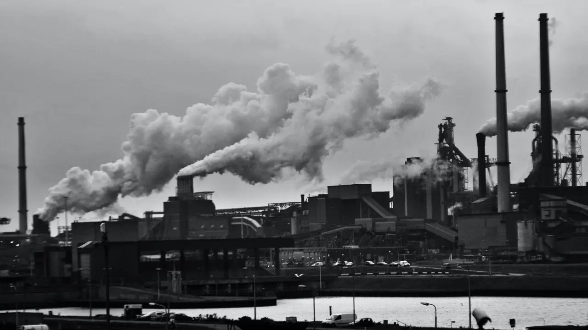
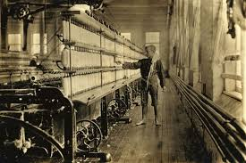

Pengertian dan Latar Belakang Revolusi Industri 1.0
Revolusi Industri 1.0 adalah fase awal dari revolusi industri yang terjadi pada akhir abad ke-18 hingga awal abad ke-19, dimulai di Inggris. Revolusi ini ditandai oleh penemuan mesin uap oleh James Watt, yang menggantikan tenaga manusia dan hewan menjadi tenaga mesin. Perubahan ini mengawali mekanisasi produksi, terutama dalam industri tekstil, pertambangan, dan transportasi. Dengan adanya mesin uap, produksi barang menjadi lebih cepat, efisien, dan dalam jumlah besar, mendorong munculnya pabrik-pabrik besar. sumber chat gpt
Perkembangan Teknologi dan Dampaknya

Pada era Revolusi Industri 1.0, berbagai penemuan teknologi selain mesin uap bermunculan, seperti mesin tenun (Spinning Jenny), mesin pemintal benang, dan lokomotif uap. Penemuan ini mendorong industri tekstil menjadi industri terkemuka di dunia. Selain itu, transportasi mengalami revolusi berkat kereta api bertenaga uap, yang mempercepat distribusi barang dan mobilitas manusia. Namun, dampak negatifnya juga mulai terlihat, seperti urbanisasi besar-besaran, kemiskinan di kota-kota industri, dan eksploitasi tenaga kerja, termasuk anak-anak. sumber chat gpt
Dampak Sosial dan Ekonomi Revolusi Industri 1.0
Revolusi Industri 1.0 mengubah struktur sosial masyarakat. Sebelumnya, mayoritas masyarakat bekerja di sektor pertanian, tetapi setelah revolusi ini, banyak yang pindah ke kota untuk bekerja di pabrik. Munculnya kelas pekerja (buruh) dan kelas pengusaha (kapitalis) memunculkan ketimpangan sosial. Dari sisi ekonomi, produksi barang meningkat pesat, menyebabkan harga barang turun dan pasar internasional berkembang. Revolusi ini juga menjadi pondasi awal globalisasi ekonomi yang mendunia. Namun, kesadaran akan hak buruh mulai berkembang karena kondisi kerja yang buruk dan jam kerja yang panjang. sumber chat gpt
Kesimpulan
Revolusi Industri 1.0 membawa transformasi besar dalam industri, teknologi, dan masyarakat. Meskipun mendatangkan kemajuan produksi dan teknologi, revolusi ini juga memunculkan tantangan sosial seperti eksploitasi buruh dan ketimpangan ekonomi. sumber chat gpt